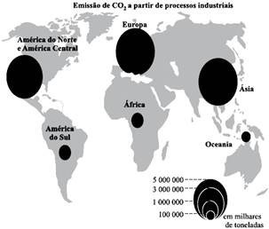
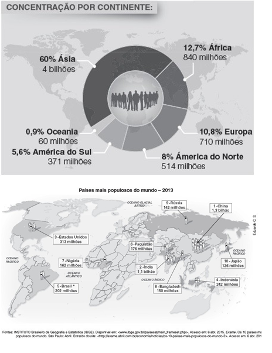
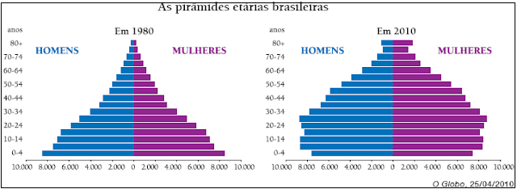

Aula 22 - Revisão (aula 17 à 21)
Questão 01
(FMJ SP 2010) A partir da leitura do mapa a seguir, é possível afirmar que:

Fonte: www.scienceblogs.com.br
a) as maiores potências industriais da atualidade podem ser relacionadas aos países que mais contribuem para o aquecimento global.
b) aumento de fontes poluidoras na Ásia está associado à proibição da negociação dos créditos de carbono imposta aos tigres asiáticos.
c) a China, apesar da importância de seu parque industrial para a economia mundial, é um dos países menos poluidores da atualidade.
d) as maiores concentrações atuais de emissão de poluentes na atmosfera estão nos países industriais que se negaram a assinar o Protocolo de Kyoto.
e) as fontes emissoras de CO2 na atmosfera estão associadas às áreas de maior concentração populacional do mundo.
Questão 02
(UNICAMP SP 2016) Considerando as atuais características demográficas da população indígena brasileira, assinale a alternativa correta.
a) Ainda existem etnias indígenas isoladas no interior da Amazônia, vivendo em grandes aldeias, com predominância de idosos, e desenvolvendo roças para o autoconsumo.
b) A atual população indígena brasileira supera, em contingente e em etnias, os habitantes nativos encontrados no início da colonização no século XVI.
c) Enquanto a população indígena do centro-sul obteve crescimento demográfico, a população habitante da Amazônica apresentou forte redução de contingente.
d) Verifica-se a tendência de reversão da curva demográfica, tendo em vista o crescimento atual da população indígena no país, sendo que a maior parcela desse contingente vive em áreas rurais.
Questão 03
(FTD 2016)

O cruzamento de diferentes fontes de informação, como as do gráfico e do mapa apresentados, permite a visualização de aparentes contradições, como é o caso
a) do Brasil, que possui a quinta maior população mundial, mas está situado numa porção do continente com baixo percentual populacional mundial.
b) dos Estados Unidos, que possuem um grande contingente, porém que representa um valor inferior a 50% da população da América do Norte.
c) da Ásia, que possui 60% da população mundial, por conta do imenso território, mas seus países, individualmente, possuem baixa população.
d) da Europa, que apresenta o maior percentual populacional mundial, apesar de ser o continente com menor território.
e) da Oceania, que abriga a Indonésia, com mais de 232 milhões de habitantes, mas que não representa nem 1% da população mundial.
Questão 04
(CEDERJ 2017) Analise o texto a seguir:
A população é o conjunto de pessoas que residem em determinado território, que pode ser uma cidade, um estado, um país ou mesmo o planeta como um todo. Ela pode ser classificada segundo sua religião, nacionalidade, local de moradia, atividade econômica e tem seu comportamento e suas condições de vida retratados através de indicadores demográficos—taxas de natalidade e de mortalidade, índice de fecundidade, expectativa de vida etc.
SENE, E.; MOREIRA, J. Geografia Geral e do Brasil. São Paulo: Scipione, 2010, p. 334. Adaptado,
O Brasil atual apresenta comportamento demográfico caracterizado por:
a) elevação da taxa de natalidade.
b) elevação da taxa de mortalidade.
c) ampliação do índice de fecundidade.
d) ampliação da expectativa média de vida.
Questão 05
(Unespar 2016) A estrutura da população e a dinâmica demográfica de um país reflete dados das condições socioeconômicas do mesmo. O Brasil está passando por uma transição demográfica que se acelerou bastante a partir da década de 1970.
Sobre isto, analise as afirmativas:
I. No Brasil, vem se reduzindo a participação da população idosa e aumentando a população jovem no conjunto total da população, fruto do aumento das taxas de natalidade e redução da expectativa de vida.
II. O índice de crescimento vegetativo no Brasil tem diminuído nas últimas décadas, embora ainda apresente índice muito alto, típico de países subdesenvolvidos. III. A transição demográfica pela qual passa o Brasil tem levado a um oneramento do caixa da previdência, gerando preocupação aos governantes.
IV. As taxas de fecundidade no Brasil têm aumentado, principalmente pela diminuição da participação da mulher no mercado de trabalho.
V. No Brasil tem aumentado o percentual de população ativa, no entanto esta população é mal remunerada e de preparo técnico relativamente limitado, o que favorece o subemprego.
Estão corretas as afirmativas:
a) I, II e III
b) I, III e IV
c) II, IV e V
d) II, III e IV
e) II, III e V
Questão 06
(FUVEST SP 2018) Contemporaneamente, pode-se definir a sociedade mundial como a do petróleo, devido à participação desta matéria-;prima em inúmeros produtos e atividades humanas. A utilização deste recurso natural data de muitos séculos, mas sua exploração e beneficiamento se expandiram somente a partir do século XX.
A respeito desse recurso natural, é correto afirmar:
a) Houve uma forte redução do preço do barril, no início da década de 1970, por conta dos resultados das pesquisas envolvendo novos procedimentos de extração e refino.
b) A estatização, no Brasil, do transporte e do refino de petróleo iniciou-se no final dos anos 1930 sob o governo de Juscelino Kubitschek.
c) O início de seu uso como fonte de energia se deu em 1920, na Inglaterra, com a descoberta de reservas pouco profundas.
d) No final dos anos 1920, sete empresas petrolíferas mundiais constituíram um cartel controlador da extração, transporte, refino e distribuição do petróleo.
e) Os Estados Unidos possuem reservas ilimitadas de petróleo, o que ocasiona independência em relação aos países participantes da OPEP.
Questão 07
(UNIPAR PR 2018) Matriz Energética é o conjunto de todos os tipos de energia que um país produz e consome. Cada país possui uma matriz energética adequada aos recursos naturais disponíveis em seu território para a produção da demanda exigida pelos setores econômicos e as necessidades gerais da população. O nosso país possui uma Matriz Energética bem variada, devido às inúmeras fontes disponíveis em nosso país, porém não muito eficiente se comparada com a de países desenvolvidos.
Considerando o exposto, assinale a afirmativa
INCORRETA a respeito da produção de energia no Brasil:
a) A Bacia Amazônica abriga um grande potencial energético. A usina de Tucuruí, a segunda maior do Brasil e a quarta maior do mundo, é uma realização do projeto do Governo Geisel que previa a utilização dos rios da região para resolver os problemas energéticos do país.
b) A usina de Itaipu, a maior hidrelétrica do mundo, localizada no rio Paraná, foi construída a partir da política industrial do Governo Geisel, tendo sido a Eletrobrás (Brasil) e a Administración Nacional de Eletricidad del Paraguai as responsáveis pelo planejamento e supervisão das obras da usina.
c) Após os "choques" do petróleo em 1973 e 1979, a Petrobrás ampliou a pesquisa e a prospecção. O resultado desse esforço foi a descoberta de bacias petrolíferas na plataforma continental.
d) O programa Nuclear Brasileiro tem alcançando resultados positivos na geração de energia nuclear. As usinas de Angra I, II e III estão em operação, gerando 19% da energia consumida no Brasil.
e) Devido à presença do carvão, a Região Sul concentra uma porcentagem significativa da capacidade geradora de termeletricidade do país. As usinas termelétricas da Região Sul respondem por mais de 15% da eletricidade gerada na região.
Questão 08
(Unespar 2016) O carvão mineral é a terceira fonte de energia mais consumida no Brasil atualmente. O petróleo e a eletricidade ocupam o primeiro e segundo. Importante fonte de energia para a primeira Revolução Industrial. As principais jazidas brasileiras se encontram no Sul e a nossa produção é sempre pequena e insuficiente para atender o consumo interno. Assinale a alternativa que apresenta razões que não explicam a baixa produtividade do carvão no Brasil.
a) Baixa qualidade do carvão e elevado teor de impurezas;
b) Falta de investimentos em tecnologia de exploração e beneficiamento;
c) As jazidas se encontram em camadas pouco espessas e descontínuas;
d) Deficiência de transportes entre as áreas produtoras e consumidoras;
e) O estrato geológico brasileiro é constituído exclusivamente por rochas magmáticas.
Questão 09
(FUVEST SP 2006) No Brasil, o setor agroindustrial prevê aumento significativo da produção de cana-de-açúcar para os próximos anos. Isso pode ser atribuído:
a) à maior flexibilidade da nova regulamentação ambiental, que implicará uma importante diminuição de custos.
b) ao atual acréscimo de subsídios governamentais para a produção de álcool, chegando a valores semelhantes aos do Pró-álcool na década de setenta.
c) à diminuição gradativa de áreas de produção da soja transgênica, aparecendo a cana como alternativa econômica e ambientalmente viável.
d) à recente ampliação da demanda externa por todos os subprodutos da cana devido à desvalorização do real nos últimos dois anos.
e) ao aumento do interesse internacional por fontes renováveis de energia, em função do Protocolo de Kyoto.
Questão 10
(UERJ 2011 ) As pirâmides etárias brasileiras

O Globo, 25/04/2010
Nas duas últimas décadas, o governo federal vem propondo ações no sentido de oferecer uma resposta às transformações na composição etária da população brasileira.
Essas ações têm seguido uma tendência que se manifesta mais diretamente na seguinte iniciativa:
a) revisão das bases da legislação sindical
b) alteração das regras da previdência social
c) expansão das verbas para o ensino fundamental
d) ampliação dos programas de prevenção sanitária.